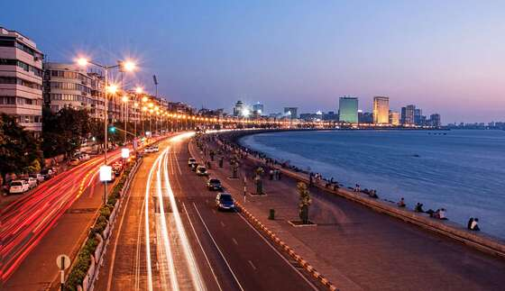
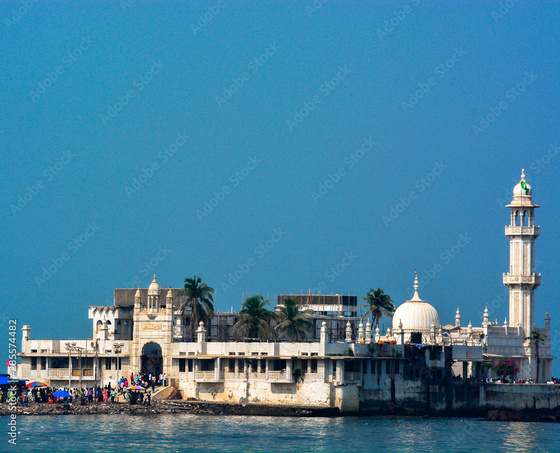
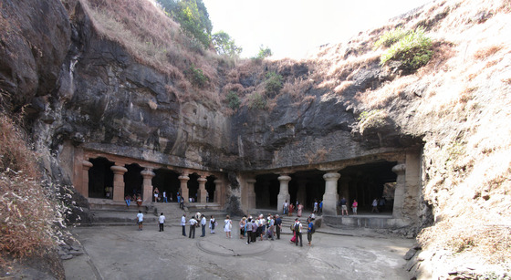

Gateway of India
The Gateway of India is a monument built during the British Raj in Mumbai. It is located on the Arabian Sea coast and is one of the most popular tourist attractions in Mumbai.

Marine Drive
Marine Drive is a scenic drive along the coast of Mumbai. It is also known as the "Queen's Necklace" due to its shape.
Juhu Beach
Juhu Beach is a popular Beach in Mumbai.It is surrounded by the Arabian Sea to the west, Versova to the north, Vile Parle to the east and Santacruz to the south.Juhu is among the most expensive and affluent areas of the metropolitan area and home to many Bollywood celebrities.

Haji Ali Dargah
Haji Ali Dargah is a mosque and tomb located on an islet off the coast of Mumbai. It is a popular pilgrimage site for Muslims.
Elephanta Caves
Elephanta Caves are a network of ancient rock-cut temples located on Elephanta Island. They are a UNESCO World Heritage Site.
Contact Us
123, Tourism Road
Mumbai, India
Phone: +91-1234567890
Email: info@mumbaitourism.com